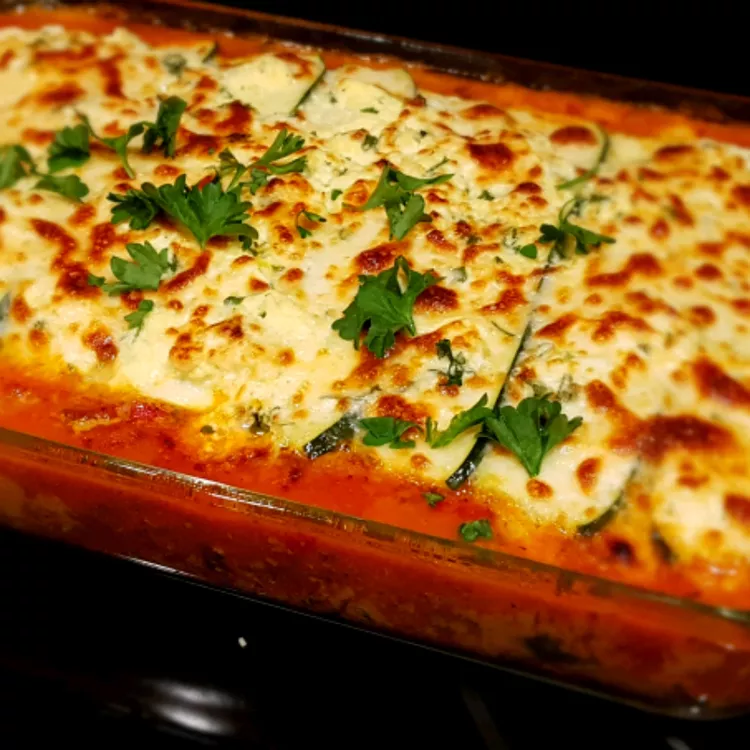

Zucchini lasagna is an ideal low-carb dinner to satisfy your italian food craving.
It's perfect in the summer with garden-fresh veggies and herbs, or in the winter when
you need a comforting meal. You won't even miss the noodles in this one!
These are the basic ingredients you'll need to make this zucchini lasagna recipe at home:
You'll find the full, step-by-step recipe below - but here's a brief overview of what you can expect when you make homemade
zucchini lasagna at home:
Preheat the oven to 325 degrees F (165 degrees C). Grease a deep 9x13-inch
baking pan
Slice zucchini lengthwise into very thin slices. Sprinkle slices lightly with salt;
set aside to drain in a colander.
To prepare the meat sauce, cook ground beef and black pepper in a large
skillet over medium-high heat, stirring, for 5 minutes. Add green pepper
and onion; cook and stir until meat is no longer pink.
Stir in tomato sauce, tomato paste, wine, basil, and oregano; add a small
amount of hot water if sauce is too thick. Bring to a boil; reduce heat and
simmer sauce for about 20 minutes, stirring frequently.
Meanwhile, stir ricotta, egg, and parsley together in a bowl until well combined.
To assemble lasgna, spread ½ of the meat sauce over the bottom of the
prepared pan. Layer with ½ of the zucchini slices, ½ of the ricotta
mixture, all of the spunach, followed by all of the mushrooms, then ½ of the
mozarella cheese. Repeat by layering in the remaining meat sauce, zucchini slices,
ricotta mixture, and mozarella. Spread Parmesan evenly over the top; cover the foil.
Bake in the preheated oven for over 45 minutes. Remove foil; raise oven temperature to
350 degrees F (175 degrees C), and bake an additional 15 minutes.
Let lasagna stand 5 minutes before serving. 
The lasgna can be assembled a day ahead and refridgerated until ready to bake.
You may need to lengthen the baking time.